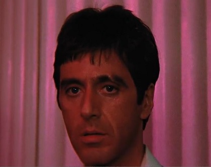

My Tumblelog
(a stream of conscious)
The best of times, the worst of times

scarface
I know of only two very real evils in life: remorse and illness.
(a stream of conscious)
The best of times, the worst of times
scarface
I know of only two very real evils in life: remorse and illness.